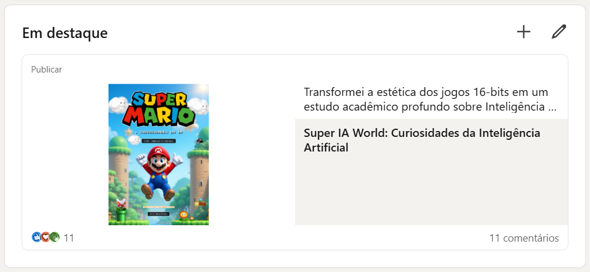
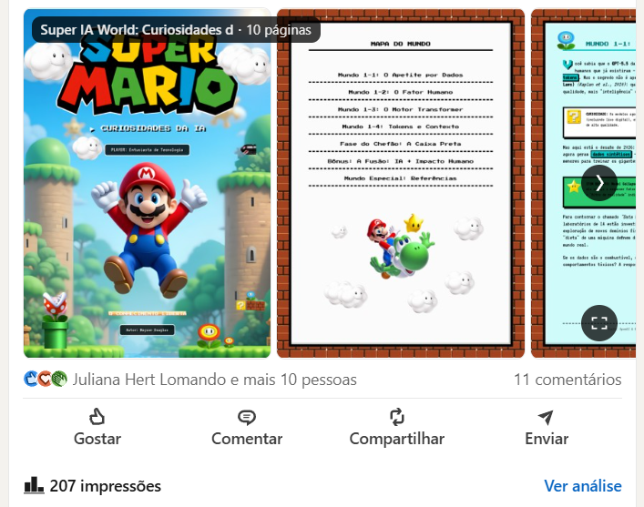
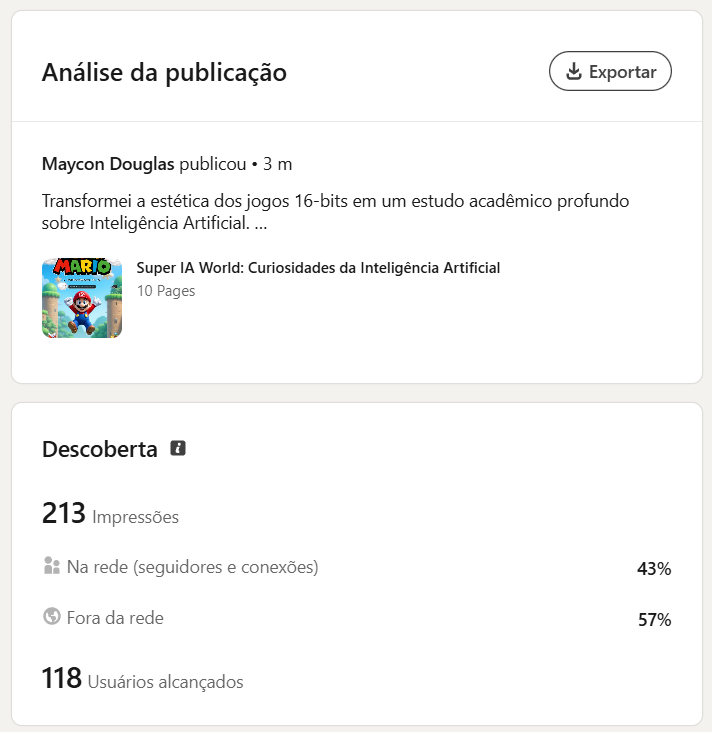

| Nome | R.A |
|---|
| Maycon Douglas Inácio Silva |
H719CD3 |
3
1. Dados de Cadastro
Campus
Campus SJC Dutra - São José dos Campos (SP)
Aluno Participante
| Número |
R.A. |
Nome |
Curso |
| 1 |
H719CD3 |
Maycon Douglas Inácio Silva |
Análise e Desenvolvimento de Sistemas |
Turma: DS4A48
Atividade individual. O aluno respondeu integralmente pela pesquisa de conteúdo, redação, desenvolvimento front-end, diagramação e divulgação do material.
Período
Ano: 2026 | Semestre: 4º | Publicação do material: 18/05/2026
Área Temática e Projeto
TRABALHO, ECONOMIA E ADMINISTRAÇÃO · Programas e projetos desenvolvidos para a comunidade.
Ação
Ebook (50 horas)
Público Beneficiário e Alcance
| Público Beneficiário | Estudantes, profissionais em transição de carreira e público leigo interessado em Inteligência Artificial |
| Pessoas Impactadas | 118 pessoas (usuários únicos alcançados, apurados na análise da publicação) |
| Licença do Material | MIT — uso, cópia e redistribuição livres para fins educacionais |
4
2. Descrição da Atividade
2.1 Descrição Geral da Atividade
A presente atividade de extensão universitária consistiu na pesquisa, redação e
desenvolvimento do e-book digital "Super IA World: Curiosidades da
Inteligência Artificial", material de divulgação científica de
10 páginas que explica o funcionamento interno dos modelos de
linguagem para um público sem formação técnica.
A escolha editorial central foi usar a estética dos jogos 16-bits dos anos
1990 como veículo pedagógico: o material é organizado como um mapa de fases,
e cada conceito de Inteligência Artificial é apresentado como um "mundo" a
ser percorrido. A decisão não é ornamental — a nostalgia reduz a barreira de entrada de
um assunto que costuma afastar o leigo pela densidade do vocabulário, e a progressão em
fases dá ao leitor uma noção de percurso que um índice convencional não transmite.
O conteúdo foi estruturado em sete unidades:
- Mundo 1-1 — O Apetite por Dados: a escala de treinamento dos
modelos atuais e o que significa processar trilhões de palavras.
- Mundo 1-2 — O Fator Humano: aprendizado por reforço com retorno
humano (RLHF) e IA Constitucional; por que a máquina não aprende sozinha o que é uma
boa resposta.
- Mundo 1-3 — O Motor Transformer: a arquitetura que viabilizou a
geração atual de modelos, explicada sem notação matemática.
- Mundo 1-4 — Tokens e Contexto: o que é um token, como a janela
de contexto evoluiu e por que ela limita o que o modelo "lembra".
5
2. Descrição da Atividade (continuação)
- Fase do Chefão — A Caixa Preta: comportamentos emergentes e os
limites da interpretabilidade; o capítulo assume explicitamente o que a área ainda
não sabe explicar.
- Bônus — A Fusão: IA + Impacto Humano: hiper-personalização e
agência digital, com as implicações práticas para quem estuda e trabalha.
- Mundo Especial — Referências: os artigos científicos e marcos
históricos que sustentam cada afirmação do material.
O conteúdo foi atualizado até maio de 2026, contemplando os modelos
em circulação naquele momento (GPT-5.5, Claude Opus 4.7 e Gemini 3.1 Pro), de modo que o
leitor encontre exemplos correspondentes às ferramentas que efetivamente tem à mão.
Do ponto de vista técnico, o e-book foi implementado como aplicação web autocontida
em HTML5 semântico, CSS3 modularizado segundo a convenção SMACSS e
JavaScript, com separação em módulos de variáveis, base, layout, componentes,
temas e impressão. Foram aplicados rótulos ARIA, metadados Open Graph e classes de
leitura assistida para acessibilidade, além de folha de impressão A4 que permite
consumir o material em papel sem perda de diagramação. O código-fonte está publicado
sob licença MIT em repositório aberto no GitHub, e a divulgação foi
feita em rede profissional aberta, sem qualquer barreira de cadastro, pagamento ou
captura de dados do leitor.
6
2.2 Descrição da Participação do Aluno
Maycon Douglas Inácio Silva (R.A. H719CD3)
Atuou de forma integral em todas as etapas da atividade, aplicando conhecimentos das
disciplinas de Programação Web, Interface Homem-Computador,
Engenharia de Software, Metodologia Científica e Comunicação e
Expressão.
- Pesquisa e apuração de conteúdo: levantamento dos artigos
científicos e marcos históricos que fundamentam cada capítulo, com verificação das
afirmações técnicas contra a literatura de origem e registro das fontes no capítulo
de Referências.
- Redação e adequação de linguagem: tradução de terminologia
técnica (Transformer, token, janela de contexto, RLHF) para linguagem cotidiana,
preservando a precisão conceitual — o critério adotado foi que nenhuma simplificação
poderia tornar a explicação falsa.
- Desenvolvimento front-end: codificação do
index.html,
modularização do CSS em arquitetura SMACSS, implementação dos fundos em
parallax, das animações de cenário e da folha de impressão A4.
- Acessibilidade e metadados: aplicação de rótulos ARIA, classes
de leitura assistida e metadados Open Graph para leitura por tecnologia assistiva e
para pré-visualização correta ao ser compartilhado.
- Direção de arte: produção e ajuste das artes em pixel art e da
capa, mantendo a coerência da referência visual 16-bits ao longo das dez páginas.
- Publicação e divulgação: disponibilização do repositório sob
licença MIT e publicação do material em rede profissional aberta, com acompanhamento
posterior das métricas de alcance descritas na seção 3.
7
3. Conclusão e Resultados Alcançados
O e-book foi concluído, publicado em acesso aberto e efetivamente consumido por
público externo à Universidade. Diferentemente de um material apenas produzido e
arquivado, esta atividade dispõe de medição de alcance real, extraída
da própria plataforma de publicação.
3.1 Alcance Apurado
| Indicador | Valor | Leitura |
|---|
| Usuários únicos alcançados | 118 | É o número de pessoas — a base para "pessoas impactadas" |
| Impressões | 207 – 213 | Exibições do conteúdo; não equivale a pessoas |
| Reações | 11 | — |
| Comentários | 11 | Proporção incomum: 1 comentário por reação |
| Engajamentos totais | 22 | Soma de reações e comentários |
| Compartilhamentos | 0 | Não houve redistribuição por terceiros |
| Salvamentos | 0 | Nenhum leitor arquivou o material |
| Envios diretos | 0 | Nenhum encaminhamento privado |
| Visualizações de perfil geradas | 4 | — |
| Seguidores obtidos | 1 | — |
Sobre a divergência nas impressões: o arquivo de exportação da
plataforma registra 207 impressões e a tela de análise consultada
posteriormente exibe 213. A diferença é o acúmulo natural entre as duas
consultas. Ambos os números constam das comprovações da seção 4, e nenhum dos dois foi
ajustado para parecer melhor.
8
3. Conclusão e Resultados Alcançados (continuação)
Sobre a leitura do bloco de engajamento: o arquivo exportado rotula
três linhas distintas como "Reações", com os valores 22, 11 e
0. A primeira é o total do bloco, e não a contagem de reações — o que se confirma pela
soma das linhas seguintes (11 reações + 11 comentários + 0 compartilhamentos + 0
salvamentos + 0 envios + 0 no botão Premium = 22). Tomar o 22 como
reações dobraria o indicador. A tabela da página anterior usa a leitura verificada.
3.2 Perfil de Quem Foi Alcançado
As duas tabelas a seguir reproduzem integralmente o bloco demográfico
do arquivo exportado pela plataforma, sem seleção.
| Dimensão | Categoria | % |
|---|
| Localidade | São José dos Campos, SP | 46% |
| São Paulo e Região | 7% |
| Jacareí, SP | 5% |
| Subtotal declarado | 58% |
| Nível de experiência | Iniciante | 47% |
| Sênior | 19% |
| Treinamento | 5% |
| Subtotal declarado | 71% |
9
3. Conclusão e Resultados Alcançados (continuação)
| Dimensão | Categoria | % |
|---|
| Setor | Tecnologia, Informação e Internet | 15% |
| Educação superior | 7% |
| Serviços de tecnologia da informação | 6% |
| Desenvolvimento de software | 6% |
| Subtotal declarado | 34% |
| Tamanho da empresa | 51 a 200 funcionários | 14% |
| Mais de 10.001 funcionários | 14% |
| 11 a 50 funcionários | 8% |
| 1.001 a 5.000 funcionários | 8% |
| 201 a 500 funcionários | 8% |
| 2 a 10 funcionários | 6% |
| 5.001 a 10.000 funcionários | 6% |
| Subtotal declarado | 64% |
Por que nenhuma coluna fecha 100%: a plataforma divulga apenas as
categorias de maior peso em cada dimensão e omite a cauda. Os subtotais em itálico
registram quanto do público está efetivamente descrito em cada linha de análise — o
restante existe, mas não foi informado pela fonte. Nenhum percentual foi normalizado nem
redistribuído.
10
3. Conclusão e Resultados Alcançados (continuação)
Origem do alcance — dado que não consta do arquivo
exportado, apurado na tela de análise reproduzida na Figura 3:
| Origem | % |
|---|
| Fora da rede de contatos do autor | 57% |
| Na rede (seguidores e conexões) | 43% |
Dois dados sustentam o enquadramento da atividade como extensão:
- 57% do alcance veio de fora da rede de contatos do autor. A
maior parte de quem leu não conhecia o autor — é público externo no sentido literal,
não circulação entre colegas.
- 52% do público não é sênior (47% Iniciante e 5% em Treinamento).
O material atingiu majoritariamente o perfil para o qual foi escrito: quem ainda não
domina o assunto. Se o alcance tivesse se concentrado no público Sênior — que ficou
em 19% —, o e-book teria sido lido por quem menos precisava dele.
Dois outros achados do bloco demográfico merecem registro, e
um deles é desfavorável:
- 27% do público declarado já trabalha com tecnologia (15% em
Tecnologia/Informação/Internet, 6% em serviços de TI e 6% em desenvolvimento de
software). Um material escrito para desmistificar IA para leigos foi lido, em mais de
um quarto de sua audiência descrita, por quem já domina o assunto. Isso não invalida
o alcance sobre iniciantes, mas mostra que a distribuição da plataforma entrega o
conteúdo a quem já demonstra interesse na área — não a quem está fora dela.
- O porte das empresas é disperso: a maior fatia é de 14%, e as
sete faixas declaradas somam 64% sem concentração relevante. O material não ficou
restrito a um tipo de organização, o que é favorável ao caráter difuso esperado de
uma publicação em acesso aberto.
11
3. Conclusão e Resultados Alcançados (continuação)
3.3 Leitura Crítica dos Resultados
Os números não são uniformemente favoráveis, e registrá-los assim é
parte do rigor da avaliação:
- O engajamento por leitor foi alto. 22 engajamentos sobre 118
pessoas alcançadas equivalem a 18,6% — bem acima do usual para
conteúdo técnico longo. A paridade entre reações (11) e comentários (11) é o dado
mais forte: comentar exige muito mais esforço que reagir, e a igualdade indica que o
material gerou conversa, não apenas aprovação passiva.
- A propagação foi nula. Zero compartilhamentos, zero salvamentos
e zero envios diretos significam que o material não circulou além da primeira
exibição. Todo o alcance veio da distribuição da própria plataforma; nenhum leitor o
repassou. É a principal limitação desta edição.
- A conversão em vínculo foi baixa. 4 visualizações de perfil e 1
seguidor sobre 118 pessoas indicam que o conteúdo foi consumido no lugar onde
estava, sem levar o leitor adiante.
- O alcance é geograficamente concentrado. 58% do público está em
São José dos Campos, São Paulo e Jacareí, o que restringe o caráter difuso que se
esperaria de um material publicado em acesso aberto.
Hipótese para a propagação nula: o e-book foi publicado como
documento anexo dentro da rede social, formato que é lido no próprio aplicativo e não
gera um endereço que o leitor possa repassar com facilidade. Não há como confirmar essa
hipótese com os dados disponíveis — ela fica registrada como ponto a testar, não como
conclusão.
12
3. Conclusão e Resultados Alcançados (continuação)
3.4 Alinhamento aos Objetivos de Desenvolvimento Sustentável
- ODS 4 (Educação de Qualidade): oferta de material didático
gratuito sobre Inteligência Artificial, escrito para público sem formação técnica e
sem barreira de cadastro ou pagamento.
- ODS 8 (Trabalho Decente e Crescimento Econômico): alfabetização
em uma tecnologia que já reorganiza o mercado de trabalho, dirigida majoritariamente
(52%) a profissionais em nível iniciante ou em treinamento.
- ODS 9 (Indústria, Inovação e Infraestrutura): divulgação
científica de arquiteturas computacionais contemporâneas, com as fontes primárias
declaradas.
- ODS 10 (Redução das Desigualdades): publicação sob licença MIT
em repositório aberto, permitindo que qualquer pessoa ou instituição use, adapte e
redistribua o material sem custo nem autorização prévia.
3.5 Local onde a atividade foi realizada
A pesquisa, a redação, o desenvolvimento front-end e a diagramação foram realizados
em ambiente de estudo do aluno em São José dos Campos (SP). A entrega à
comunidade ocorreu em meio digital aberto: repositório público no GitHub, sob
licença MIT, e publicação em rede profissional aberta, sem restrição de acesso.
13
3. Conclusão e Resultados Alcançados (continuação)
3.6 Considerações Finais
- Dificuldades enfrentadas: o desafio central foi impedir que a
linguagem lúdica corrompesse a precisão técnica. Explicar a arquitetura Transformer
sem notação matemática e sem tornar a explicação falsa exigiu várias reescritas, e o
critério final adotado foi verificar cada simplificação contra o artigo científico
de origem antes de aceitá-la. O segundo desafio foi o prazo de validade do conteúdo:
um material sobre IA envelhece em meses, o que obrigou a datar explicitamente o
recorte (maio de 2026) em vez de escrever como se fosse permanente.
- Sugestões: para uma próxima edição, publicar o e-book também
como página web com endereço próprio, e não apenas como documento anexo à rede
social — é a intervenção mais direta sobre a propagação nula descrita em 3.3.
Recomenda-se ainda medir o alcance em dois momentos distintos (uma semana e um mês
após a publicação) para separar o efeito do impulso inicial do consumo de cauda
longa. Por fim, o dado de que 27% da audiência descrita já atua em tecnologia sugere
testar canais fora do meio técnico, onde o material encontraria o público que de
fato pretende alcançar.
- Observações: a licença MIT e o repositório aberto tornam o
material reaproveitável por escolas e cursos técnicos sem qualquer trâmite de
autorização, o que amplia o alcance potencial para além do que as métricas desta
publicação registram.
14
4. Comprovação
A comprovação fundamenta-se no material publicado em acesso aberto, no código-fonte
versionado e nas capturas da análise oficial de alcance fornecida pela própria
plataforma de publicação.
Endereços públicos do material:
- Código-fonte e e-book (GitHub, licença MIT):
https://github.com/MayconDIS/Super_IA_World-E-book_Curiosidades_da_IA
- Publicação e divulgação:
https://www.linkedin.com/feed/update/urn:li:activity:7462130232884580352/
- Dados brutos de alcance: arquivo de exportação da própria
plataforma, mantido junto a este relatório.
Comprovação 1 — Publicação em destaque no perfil do autor
Figura 1 – Publicação fixada em destaque, com o título do e-book e o registro de 11 comentários

Fonte: Captura da publicação do autor (2026) — acervo do autor.
15
4. Comprovação (continuação)
Comprovação 2 — Carrossel de páginas do e-book e contador de impressões
Figura 2 – Capa, Mapa do Mundo e Mundo 1-1 do e-book, com o contador de 207 impressões

Fonte: Captura da publicação do autor (2026) — acervo do autor.
16
4. Comprovação (continuação)
Comprovação 3 — Análise oficial de alcance da publicação
Figura 3 – Tela de análise da publicação: 213 impressões, 118 usuários alcançados e a divisão entre alcance dentro (43%) e fora (57%) da rede de contatos

Fonte: Painel de análise da plataforma de publicação (2026) — acervo do autor.